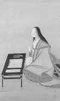

Murasaki Shikibu (978-1014) bir Japon şairi, roman ve günlük yazarıydı. Genji’nin Masalı adlı kitabı tarihte yazılmış ilk romanlardan biridir. 1008 yılında yayınlandığı düşünülmektedir. 2008 yılında kitabın yazılmasının 1000. yıl dönümü kutlanırken dikkatler yeniden kitabın üzerinde toplanmıştır. Kitap hem dünya edebiyatı hem de Japon dili için bir dönüm noktası olarak görülmektedir.

Murasaki, Japon İmparatorluğu’nun başkenti olan Kyoto’da doğdu. Asil bir aileye mensuptu. İmparatoriçenin nedimesi olmuştu. Kıdemli bir imparatorluk görevlisi olan babasından kapsamlı bir eğitim aldı. Bu, o dönemde Japon kadınları için alışılmadık bir durumdu. Romanını, kocası Fujiwara Nobutaka’nın 1001 yılındaki ölümünün ardından yazmaya başladığı tahmin edilmektedir.
The Tale of Genji imparatorun, başından çok sayıda duygusal ilişki geçen oğlu Genji’nin hikayesini anlatır. Murasaki’nin eserinde yüzlerce karakter vardır. Roman boyunca Japonya’daki çeşitli yerlerin ismi anılır. Öykü onlarca yıla uzanan bir zaman dilimini içine alacak şekilde devam eder. Kitapta modern romanların pek çok özelliği bulunmamaktadır. Örneğin; kitabın sonunda olay örgüsü herhangi bir sonuca bağlanmamaktadır. Murasaki’nin kullandığı arkaik resmi Japonca dili nedeniyle günümüzde kitabın Japonlar için bile anlaşılması çok zordur. Romanı daha da karmaşık yapan, Murasaki’nin neredeyse hiç özel isim kullanmamasıdır. Zira dönemin Japonya’sında bir insanın ismiyle çağrılması hakaret olarak kabul edilmekteydi (yazarın da gerçek adı bilinmemektedir. Murasaki Shikibu onun lakabıdır).
The Tale of Genji’ye ek olarak Murasaki düzinelerce şiir yazmıştır. Ayrıca Heian Dönemi (794-1185) Japonyası’nın günlük hayatı ve geleneklerine ilişkin önemli kayıtlar içeren bir günlüğü bulunmaktadır. Günlük 1010 yılında son bulmaktadır. Murasaki bu tarihten dört yıl sonra ölmüştür.
Ek Bilgiler
1- Kitabın 1000. yılı vesilesiyle Kyoto Üniversitesi’nden araştırmacılar Murasaki’nin yazdıklarını okuyan bir robot geliştirmişlerdir.
2- Kitap İngilizce’ye ilk kez Arthur Waley (1889-1966) tarafından 1935 yılında çevrilmiştir.
3- Kitabında sekiz yüze yakın şiir bulunmaktadır.